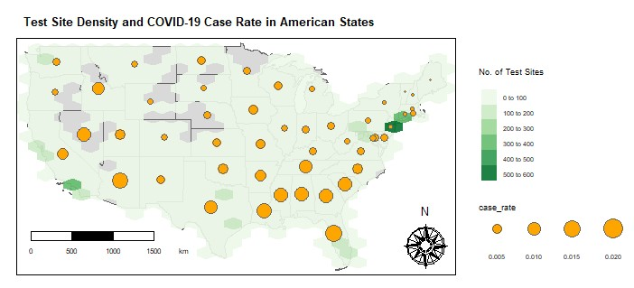
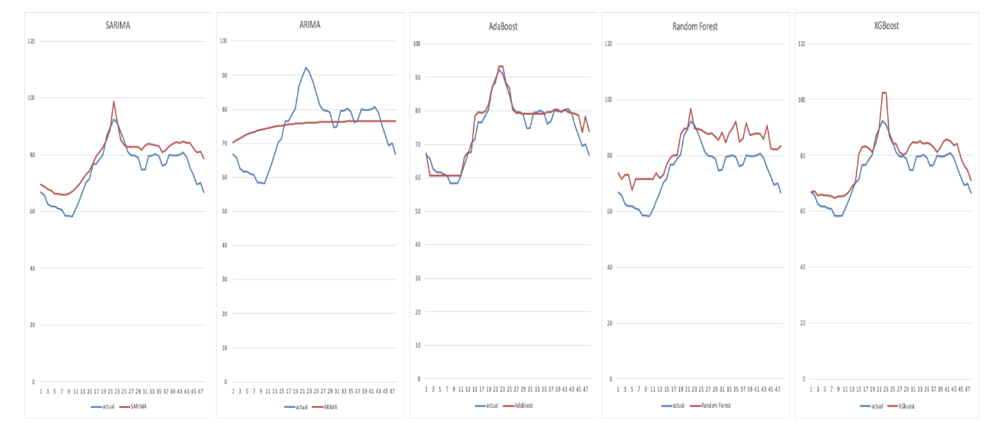
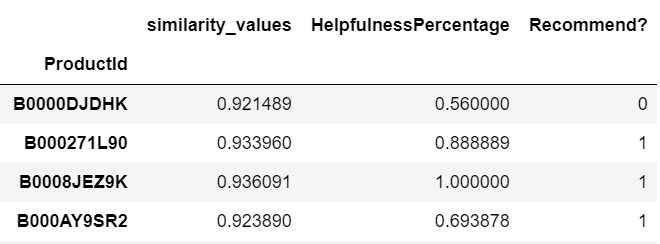
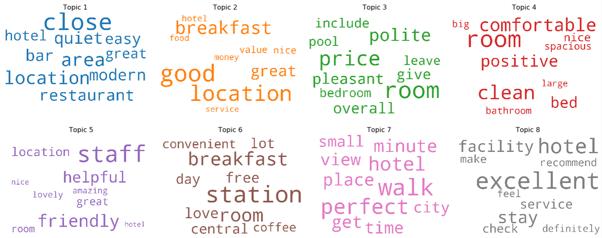
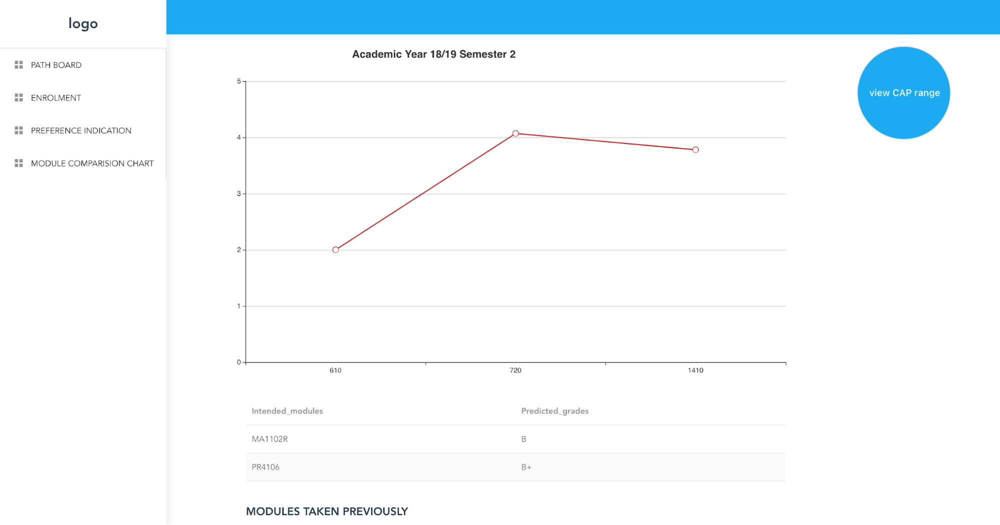
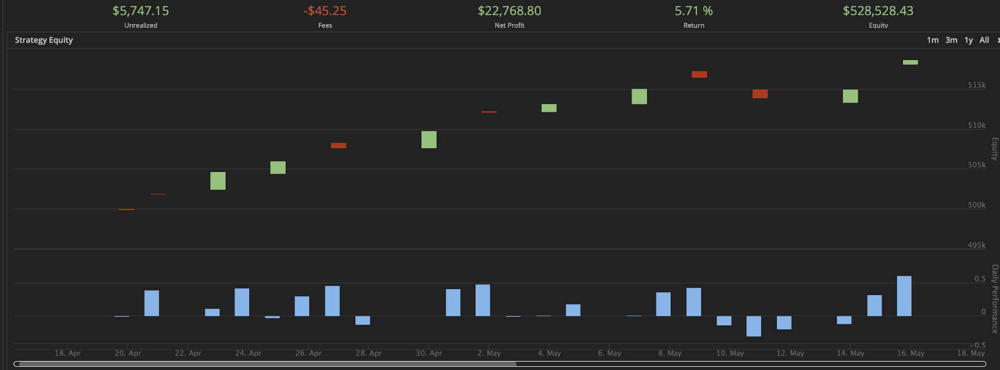

Projects
Geospatial Analysis of COVID-19 in the United States
BT4015 Geospatial Analytics
- Identified potential risk factors of COVID-19 in the United States
- Concepts: Geospatial Analysis (Point Pattern Analysis, Hypothesis Testing, Spatial Autocorrelation, Spatial Autoregression, Spatial Interpolation)
- Tools: R
Heart4U
CS50W Web Programming with Python and JavaScript
- Built a photo sharing networking service, where users can apply filters to photos before uploading and sharing them with their followers
- Concepts: Web Development
- Tools: Python (Django), JavaScript (CamanJS), HTML, CSS (Bootstrap)
Pizza Frenzy
CS50W Web Programming with Python and JavaScript
- Built a web application for handling Pinocchio's Pizza & Sub's online orders, where customers can browse the restaurant's menu, add items to their cart and submit orders while restaurant owners can add/update menu items and view orders that have been placed
- Concepts: Web Development
- Tools: Python (Django), JavaScript, HTML, CSS (Bootstrap)
Flack
CS50W Web Programming with Python and JavaScript
- Built an online messaging service where users can login with a display name, join/create channels and send/receive messages in real-time
- Concepts: Web Development
- Tools: Python (Flask), JavaScript (Socket.IO), HTML, CSS (Bootstrap)
Just Books
CS50W Web Programming with Python and JavaScript
- Built a book review website where users can search for books, view and leave reviews
- Created an API where users can query for book details and reviews programmatically
- Concepts: Data Management, Web Development, APIs
- Tools: Python (Flask), SQL (PostgreSQL), JSON, HTML, CSS (Bootstrap)
Energy Price Forecasting
NUS-EMC Business Analytics Innovation Challenge 2020
- Developed a package to perform Uniform Singapore Energy Price (USEP) forecasting
- Built a Tableau dashboard to visualise overall statistics and relational drilldowns
- Concepts: Natural Language Processing, Machine Learning, Forecasting, Data Visualisation
- Tools: Python, Tableau
Food Recommendation System
BT4221 Big Data Techniques and Technology
- Analysed what customers liked/disliked about Amazon food products from online reviews
- Recommended similar products by matching product reviews with characteristics of other products
- Concepts: Neural Networks, Cosine Similarity, Natural Language Processing
- Tools: Python
Sentiment Analysis & Topic Modelling of Hotel Reviews
BT4222 Mining Web Data for Business Insights
- Created a standardised positive/negative hotel review classifier to provide customers with a more precise representation of hotel performance
- Analysed areas of customer satisfaction/dissatisfaction from hotel reviews to allow hotels to plan their next course of action to improve services
- Concepts: Sentiment Analysis, Machine Learning, Topic Modelling, Natural Language Processing, Neural Networks
- Tools: Python
Plannerly
BT3103 Application Systems Development for Business Analytics
- Analysed and extracted relevant data from a NUS synthetic dataset
- Created a web application to aid NUS students in their module planning process through features like enrolment information, path boards, comparison charts, preferences and recommendations
- Concepts: Data Analysis, Web Development
- Tools: Python, HTML, CSS, JavaScript, Vue.js
Foreign Exchange Trading
BT2101 Decision Making Methods and Tools
- Built a foreign exchange trading algorithm to generate as much positive returns as possible during a fixed time period
- Generated 5.7% positive returns when backtested on rates from April 2018 to June 2018 on QuantConnect
- Concepts: Machine Learning, Logistic Regression, Long Short-Term Memory, Moving Average Crossover
- Tools: Python, QuantConnect
ShareNUS
CP2106 Independent Software Development Project (Orbital)
- Created an Android mobile application to make the buying and selling of used, unwanted notes and textbooks easier and more convenient for NUS students
- Concepts: Mobile Development
- Tools: Java, HTML, XML, Android Studio
Social Media Dashboard
BT2102 Data Management and Visualisation
- Analysed and extracted relevant social media data from dataset provided by Sid's Cookies Ltd
- Produced a multi-paged dashboard to assist the company in learning more about their potential customers and when and where is the best to post social media content
- Concepts: Data Management, Data Analysis, Data Visualisation
- Tools: SQL (MySQL), Tableau